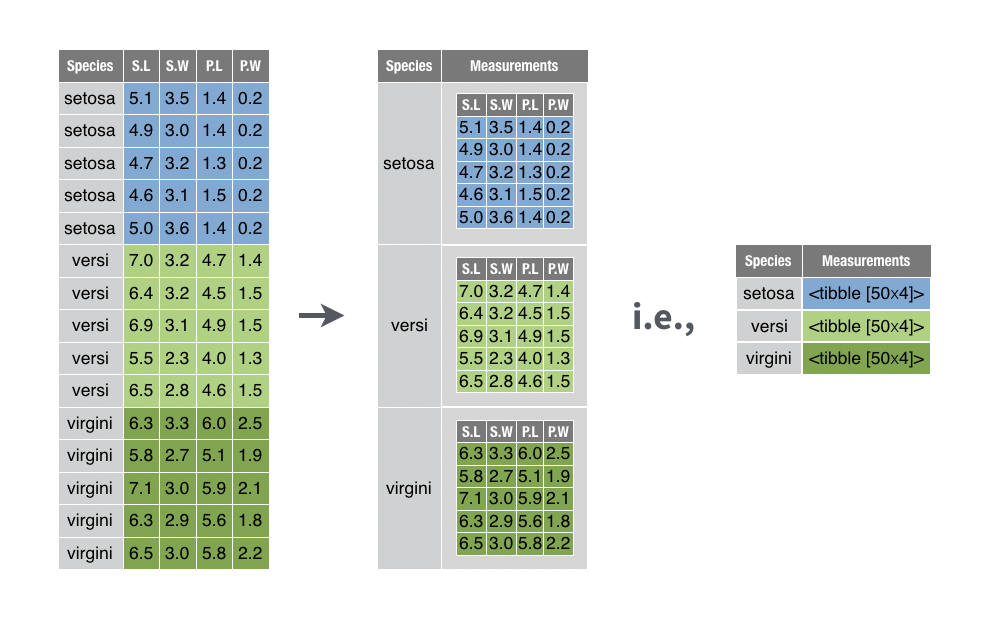
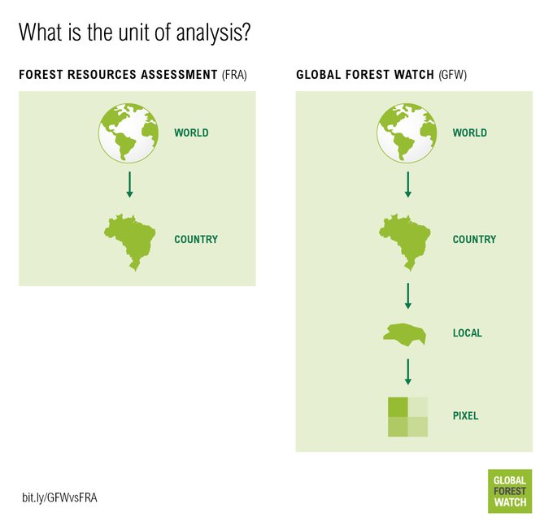

Model Building (II)
Deep Dive — List-Columns · purrr · broom
Hong Kong Shue Yan University · BSc in Applied Data Science
2026-04-21
ADS370 · Model Building (II)
ADS370 · R for Data Science
Model Building (II)
Deep Dive · List-Columns · purrr · broom
April 21, 2026
> SYSTEM BOOT… ADS370_W13.qmd | RENDERING: OK | MANY_MODELS.SCRIPT LOADED █
Last Week’s Recap (1/2): What We Covered in W12
Week 12 — Model Building (I)
Three themes of last week:
- Defining Models — a model is a summary that captures the signal of a dataset and discards the noise. Two families: predictive vs. data-generating.
- A Simple Linear Model —
sim1dataset,lm(y ~ x), parameters \(\beta_0, \beta_1\), loss = Root Mean Squared Error (RMSE). - Residuals as a Diagnostic —
y - \hat{y}should look like “noise” once a good model has removed the signal.
The Wickham mantra from W12: > “All models are wrong, but some are useful.” — George Box > > The point of a model is not to capture reality perfectly, but to strip away the explained pattern so you can see what remains.
Key Formulas (W12)
Linear model with intercept: \[\hat{y}_i = \beta_0 + \beta_1 x_i\]
Loss — Root Mean Squared Error: \[\text{RMSE}(\beta_0,\beta_1) = \sqrt{\frac{1}{n}\sum_{i=1}^{n}(y_i - \hat{y}_i)^2}\]
Residual: \[r_i = y_i - \hat{y}_i\]
R commands you met last week:
Key takeaway from W12 → W13: Once you can fit one model, you want to fit many. Today we learn how.
Last Week’s Recap (2/2): Model Families & Beyond lm()
Model Families — Tour from W12
Categorical Predictors
A factor with k levels becomes k − 1 dummy columns. lm(y ~ factor) estimates group means via contrast coding.
Interactions (Continuous × Categorical)
y ~ x * group fits a separate slope per group. Useful when the effect of x differs across groups.
Splines (Non-Linear Smooths)
splines::ns(x, df = 4) or poly(x, 2) fits smooth curves through a cloud of points — still a linear model in the coefficients.
Logistic Regression
glm(y ~ x, family = binomial) — the “switch” for binary outcomes. Predicts a probability, not a number.
From “One Model” to “Many Models”
The W12 → W13 bridge:
Last week, every example fit one lm() to an entire dataset.
But what if your dataset contains dozens or hundreds of natural groups — countries, patients, products, store branches — and you want to fit one model per group?
A for loop would work. But it would be ugly, slow, and hard to reason about.
This is exactly the problem Wickham Chapter 25/20 “Many Models” solves. We will use:
nest()— collapse groups into list-columnspurrr::map()— apply a function across every groupbroom::glance()/tidy()/augment()— extract tidy model output
Today’s Outline
> SESSION_PLAN.TXT — WEEK 13 — 42 SLIDES — MODEL BUILDING (II)
Motivation — Why Many Models? [Slides 5–9]
gapminder · life expectancy per country · three big ideas
Lists & List-Columns [Slides 10–16]
Mailund Ch 8 · named values · tibble vs data.frame · tidyr::nest() · meta-observation · Quick Check §1
Many Models with purrr [Slides 17–23]
map · mutate + map · map2 for residuals · unnest · 142 residuals plot
Creating & Simplifying List-Columns [Slides 24–27]
3 canonical patterns · str_split · summarise+list · map_dbl/chr
The broom Package [Slides 28–33]
Problem (non-tidy output) · three verbs · glance · tidy · augment · Quick Check §2
End-to-End Pipeline [Slides 34–36]
Full gapminder pipeline · R² per continent · HIV/AIDS + Rwanda story
Wrap-Up · Assessments · References [Slides 37–42]
Key takeaways · AT5 Quiz 2 (15%) · W14 preview · APA references
TIMELINE SUMMARY
─────────────────────────────────
90 min lecture | 50 min AT5 Quiz 2 (online)
─────────────────────────────────
Why Many Models? The Central Question
A Motivating Question
What if one model is not enough?
In W12 we treated the data as a single population. But many real datasets are naturally grouped:
- Life expectancy by country
- Test scores by school
- Sales by store branch
- Sleep by patient
Two options when data have groups:
Ignore the grouping — fit one global model. You may average away important differences.
Fit one model per group — capture local patterns, then compare. This is the “Many Models” idea.
The W13 Strategy
data → nest → mutate + map → unnest → tidy output
Three tidyverse packages work together:
tidyr—nest()/unnest()purrr—map()familybroom—glance()/tidy()/augment()
The Reading Today
Primary readings:
- Wickham & Grolemund (2017) — Chapter 25 “Many Models”
- Mailund (2017) — Chapter 8 “More R Programming” (lists, environments, functions)
Together they cover the why (Wickham) and the how at the language level (Mailund).
Watch: Many Models — Hadley Wickham
Hadley Wickham — “Managing Many Models with R” (~69 min, watch ~20 min excerpt)
Introduces nested data frames, purrr, and broom on the gapminder dataset.
The gapminder Dataset
What Is It?
gapminder is a small R package (by Jenny Bryan) that ships a tidied subset of Gapminder.org’s free data.
Every row is one (country, year) observation of:
country— factor, 142 levelscontinent— factor, 5 levelsyear— integer, 1952–2007 (every 5 years)lifeExp— life expectancy at birth (years)pop— total populationgdpPercap— per-capita GDP (USD 2005)
Size: 1,704 rows = 142 countries × 12 years.
Why this dataset for teaching many-models? It is small enough to run live, but rich enough that one global trend hides dramatic per-country stories (HIV in Southern Africa, genocide in Rwanda, the collapse and recovery of former Soviet states).
First Look
What you see: For most countries, life expectancy rises steadily — but a handful plunge in the 1990s.
The interesting story lives in the residuals, not the trend.
Today’s goal: peel away the linear trend from every country and see what is left.
A Single-Country Fit: New Zealand
Start Small — One Country
Before we fit 142 models, let us fit one and see what we get.
Interpretation: New Zealand’s life expectancy rises by roughly 0.19 years per calendar year — two extra months of life per year — over 1952–2007.
Visualise the Fit
Visualise the Residuals
Observation — NZ: Residuals are tiny, structureless, ≤ ±0.4 yr. A linear model really does capture New Zealand’s post-war progress.
The Problem
Fitting 142 countries by hand would mean copy-pasting this code 142 times. Clearly wrong.
Question for the class: “What tool in R lets us avoid copy-paste?”
Answer: iteration — a for loop, a purrr::map(), or (best) a whole data-frame-centred design.
Scaling Up: 142 Countries
The Naive Approach — and Why It Fails
Option A — for loop (works, but ugly):
Problems:
- Results live in a plain list — hard to join back with country/continent metadata.
- No natural place for residuals, predictions, fit statistics.
- Every downstream operation needs another
forloop.
The Tidyverse Approach
Keep everything inside one data frame.
The data frame gains:
- a column of data frames (one sub-dataset per country)
- a column of lm model objects
- a column of predictions
- a column of residuals
All with one row per country — a meta-observation.
The Four-Step Plan
Nest
Use tidyr::nest() to collapse each country’s rows into a single-cell data frame. Result: 142 rows × 3 cols (country, continent, data).
Map
Use purrr::map() + mutate() to fit lm(lifeExp ~ year) inside every cell of the data column. Get a new list-column model.
Extract
Use broom::glance(), tidy(), or augment() to pull tidy numbers out of every model: R², coefficients, residuals.
Unnest
Use tidyr::unnest() to flatten list-columns back into regular columns — now ready for ggplot and downstream analysis.
Read the four words together: nest · map · extract · unnest. That phrase summarises the whole of Wickham Ch 25.
Three Big Ideas of Today
Every step we take for the rest of today can be reduced to one of three fundamental ideas. Keep them in mind — they will reappear in different wrappers throughout the lecture.
Collapse related rows into a single cell. Instead of 1,704 rows, we store 142 rows where one column is a data frame.
Package: tidyr
Verbs: nest() / unnest()
Mental model: “one row per group”
Store arbitrary R objects inside a tibble — not just numbers. A data frame can contain models, plots, nested tables, fitted values, anything.
Package: tibble, purrr
Verbs: mutate() + map()
Mental model: “one thing per group”
Statistical objects in R are messy — R² hides in summary(), coefficients in another, residuals elsewhere. The broom package turns all three into tidy data frames.
Package: broom
Verbs: glance() / tidy() / augment()
Mental model: “models become data”
These three ideas interlock. Take any one away and the whole many-models workflow collapses.
Mailund Ch 8 Refresher: Lists in R
What Is a List?
From Mailund (2017), Ch 8, §“Data Structures”:
A list is an R object that can hold values of different types in a single container — numbers, characters, vectors, other lists, functions, even model objects.
Three ways to create a list:
Indexing — The Single vs. Double Bracket
| Syntax | Returns | When to Use |
|---|---|---|
x[1] |
a list of length 1 | keep list structure |
x[[1]] |
the element itself | extract content |
p$name |
named element | by name |
p[["name"]] |
named element | programmatic name |
The most common R bug: using [ when you want [[. The first gives a list-of-one; the second gives the value. Debug with class() if types look wrong.
Why Lists Matter for Today
A data frame is a list whose elements are equal-length vectors.
This fact is what makes list-columns possible. A tibble column does not have to be an atomic vector — it can be a list of anything.
Recursive Data
Real data (JSON from APIs, XML, nested CSVs) is hierarchical. Lists are how R represents hierarchy.
Pronunciation: tibble /ˈtɪb.əl/ — the tidyverse’s modern data-frame class. purrr /pɜːr/ — pronounced like “purr”, not “pee-yoo-arr-arr-arr”.
Lists: Named Values and Deep Indexing
Named Access Is Self-Documenting
Names are strings, but behave like structure labels. Access by name is safer than access by position — reordering the list does not break your code.
The names() Function
Deeper Indexing: Chained [[
Nested list — depth > 1:
Extracting nested values:
Why pluck() is safer: it returns NULL (not an error) when a path is missing. Great for messy JSON where fields appear or disappear.
Key idea for today: the same machinery (lists, deep indexing, names) is what tibbles with list-columns use under the hood. If you can index a list, you can work with list-columns.
What Is a List-Column?
The Formal Definition
A list-column is a column of a tibble whose class is list instead of numeric, character, or factor.
Each cell of the column holds an arbitrary R object — a vector of varying length, a tibble, an lm fit, a ggplot plot, or NULL.
The Minimal Example
Each cell of y holds a different kind of thing.
Why Base data.frame Cannot Do This
A base R data.frame enforces atomic columns — every cell must be a single number, character, or factor level.
Try data.frame(x = 1, y = list(1:3)) and R will either silently unlist it or throw an error.
Tibbles were designed from day one to support list-columns. This is a foundational difference between data.frame and tibble.
Visualising a List-Column
Why This Matters
With list-columns, the data frame becomes a universal container:
- one row per group → scalable
- one model per row → no loose variables
- one pipeline for everything → composable
tibble vs. data.frame — A Quick Comparison
Both are tabular containers, but the tibble was redesigned to support modern tidyverse workflows including list-columns, lazy printing, and stricter type behaviour.
| Property | base::data.frame | tibble::tibble |
|---|---|---|
| Printing | All rows and columns — floods the console | 10 rows × fitting columns + column types shown |
| Subset behaviour |
df[,1] silently drops to a vector
|
tb[,1] always returns a tibble
|
Partial match on \(</td>
<td><code>df\)nam may match name
|
Warns on partial match | |
| Stringsasfactors (pre-R 4.0) |
TRUE default — converts chr → fct
|
Never converts |
| List-columns | Possible but awkward — often errors | First-class feature |
| Row names | Supported | Discouraged — use a dedicated column instead |
| Speed on large data | Slower — copies on modify |
Same (both data-frame at heart); data.table faster still
|
| Interoperability | Universal in base R |
Automatic coercion via as.data.frame()
|
| Best practice today | Use when passing to old packages | Default for tidyverse pipelines |
Bottom line for this lecture: everything we do today — nest(), map(), broom — assumes tibbles because they can hold list-columns. If a legacy function returns a data.frame, call as_tibble() first.
tidyr::nest() — Collapsing Groups into List-Columns
The Verb
nest(data, .by = ..., .key = "data")
Takes a grouped tibble and collapses every group into a single cell that holds a tibble of that group’s rows.
Step-by-Step
What happened:
- Every (country, continent) pair got its own row.
- The other four columns (year, lifeExp, pop, gdpPercap) are now a nested tibble in the
datalist-column.
Visual Mental Model

The Inverse — unnest()
Modern syntax (tidyr ≥ 1.3):
Why Nest?
Once the data is nested, each row is a country. Operations on rows now operate one country at a time — exactly what we need for many-models.
The “Meta-Observation” Concept
Regular Observation vs. Meta-Observation
Regular observation (Wickham’s “tidy data”): Each row = one observation of one individual unit.
Example: (Afghanistan, 1952, 28.8 yr, 8.4M pop) — one country-year.
Meta-observation: Each row = a summary of many observations of one group.
Example: (Afghanistan, <tibble of 12 rows>, <lm fit>, <R² = 0.95>) — the country as a whole unit.
Why This Is Powerful
A regular tibble answers questions about individual rows: “what was Afghanistan’s pop in 1970?”
A meta-observation tibble answers questions about groups: “which countries have the worst linear fit?” “which continent’s life expectancy grew fastest?”
Both are tidy. They just describe different kinds of unit.
The Unit of Analysis Shift

When to Shift?
| Question asks about… | Unit to nest by |
|---|---|
| individual countries | country |
| trends over time within a country | country |
| differences between continents | continent |
| patient-level variability | patient_id |
| store-level comparisons | store_id |
Key insight from Wickham: “The unit of analysis is often more interesting than the data itself.”
Model building is almost always about comparing models across groups — and that needs the meta-observation viewpoint.
Quick Check §1 — Lists & List-Columns
Warm-Up Question (2 min)
Q1. Given x <- list(a = 1:3, b = "hello", c = lm(mpg ~ wt, mtcars)), what does each of these return? Explain in one line.
x[1]x[[1]]x$cx[["a"]][2]length(x)
Short Code Question (5 min)
Q2. Using the iris dataset, write a 2-line pipeline that:
- nests iris by
Species - returns a tibble with one row per species and a
datalist-column
What does the resulting tibble print look like? How many rows? How many columns?
Reveal — Solutions
A1 (answers):
x[1]→ a list of length 1 with elementa. Class:list.x[[1]]→ the integer vectorc(1,2,3). Class:integer.x$c→ the lm object itself.x[["a"]][2]→2L— second element ofa.length(x)→3(three top-level elements).
A2 (solution):
Prints:
# A tibble: 3 × 2
Species data
<fct> <list>
1 setosa <tibble [50 × 4]>
2 versicolor <tibble [50 × 4]>
3 virginica <tibble [50 × 4]>Three rows (one per species), two columns. The data column is a list-column where each cell holds a 50-row × 4-column sub-tibble.
Transition: Once we can nest, the next natural question is: how do I apply a function to every cell of the list-column? That is the job of purrr::map() — our next topic.
purrr::map() — Functional Iteration
The Replacement for for Loops
map(.x, .f, ...)
Input: a list or vector .x and a function .f. Output: a list of the same length, where element i is .f(.x[[i]]).
The Map Family
| Function | Returns |
|---|---|
map() |
a list (always) |
map_dbl() |
a double vector |
map_int() |
an integer vector |
map_chr() |
a character vector |
map_lgl() |
a logical vector |
map2(.x, .y, .f) |
iterate over two lists in parallel |
pmap(.l, .f) |
iterate over n lists |
Simple Example
Compare with a for loop — same result, less boilerplate, typed output.
Why purrr? Why Not base::lapply?
lapply() is perfectly fine — in fact, map() is a direct descendant. Differences:
- Type safety:
map_dbl()errors if a function returns anything other than a double. - Anonymous functions:
~ .x^2is shorthand forfunction(x) x^2. .default: graceful handling of errors withpossibly()/safely().- Consistent argument order:
.xfirst,.fsecond, extra args via....
The Formula Shortcut
Style recommendation: For one-line anonymous functions, ~ .x + 1 (tilde + .x) is idiomatic tidyverse. For anything with a comma, prefer function(x) { ... } or \(x) ... for clarity.
Today’s plan: We will use map() to apply lm() to each nested sub-tibble — one fit per country, no loop.
Writing a country_model() Function
The Single-Country Recipe
Why factor this into a function?
- Reusability — one clear name, one thing.
- Testability — call it on one country first to debug.
- Documentation — readers instantly see “this fits a linear model”.
- Composability — plug into
map()orforloop equally well.
Test It on One Country
Question for the class: Why do we subtract 1950 from year in a real analysis?
Answer: to make the intercept interpretable as “life expectancy in 1950” rather than “year 0 AD” (where it would be a nonsense negative number).
Production Version — Centred Year
Now the intercept is 29.9 years — Afghanistan’s life expectancy in 1950 — and the slope is the yearly rise.
Pronunciation: functional /ˈfʌŋk.ʃən.əl/ — a function of functions. map(), reduce(), and filter() are the three classical functionals of functional programming.
Next step: Apply country_model() to every nested country tibble using mutate() + map().
Storing Models as a List-Column
The Magic Line
Each row now holds its own fitted model. 142 lm() fits, one per cell.
What mutate() + map() Did
mutate() iterates rows
As in every tidyverse pipeline, mutate() operates on rows of a tibble.
map() iterates cells
map(data, country_model) calls country_model(data[[i]]) for each i and collects the results into a new list.
The result is a list-column
Since country_model() returns an lm object (non-atomic), the new column model must be a list-column — and it is.
Why “Keep Things Together”?
The key design principle:
Everything that belongs to one country — the data, the model, any derived quantities — lives in one row of one tibble.
This is safer than keeping three parallel objects (countries, datasets, models) that could become misaligned.
Filter, Arrange, Join Still Work
Peek Inside a Model
map2() — Iterating Over Two Lists Together
Getting Residuals — The Two-Input Problem
To get residuals we need both the data and the model. map() takes only one input; we need map2().
map2(.x, .y, .f)
Calls .f(.x[[i]], .y[[i]]) for each i. Returns a list.
Residuals Workflow
What add_residuals(data, model) does: For each (data_i, model_i) pair, add a new column resid = lifeExp - predict(model, data).
The Residuals Tibble, Inspected
Now every country has its own residual series — ready for plotting.
Analogy: If map() is a zip through one list, map2() is a zip through two lists side-by-side — like two conveyor belts feeding into one worker.
Next step: We have 142 residual tibbles nested inside our outer tibble. To plot them with ggplot, we need to flatten them back to a single long data frame. That is tidyr::unnest().
tidyr::unnest() — Flattening List-Columns
The Verb
unnest(data, cols)
Expand a list-column of tibbles back into regular columns, repeating the non-nested columns as many times as needed.
Unnesting the Residuals
The 142 nested tibbles became 1,704 ordinary rows — country and continent repeated appropriately.
Inverse Relationship
nest() and unnest() are inverses — one groups, the other ungroups.
Plotting 142 Residuals at Once
What you see — the punchline: Linear fits work well everywhere except Africa in the 1990s, where residuals dip ~5 years below zero. The linear model missed something real — and we only see it by fitting 142 separate models and looking at their residuals together.
This is why we learn Many Models.
Three Canonical Patterns for Creating List-Columns
Beyond nest(), there are three everyday ways a list-column appears in your pipeline. Each maps to a different tidyverse verb.
Use when: you have a grouped data frame and want one row per group.
Result: a list-column named data (by default) where each cell holds a sub-tibble.
Inverse: unnest().
Use when: a character column needs splitting into variable-length vectors.
Result: a list-column where each cell is a character vector of arbitrary length.
Note: separate_wider_delim() is usually better when the split is uniform.
Use when: a summary function returns more than one value per group (quantiles, histogram counts, confidence intervals).
Result: a list-column of numeric vectors or tibbles.
Follow with: unnest() or map_dbl().
Pattern 2 Deep Dive — str_split Vectorised
The Motivating Example
Many real-world datasets store structured information as delimited strings:
One professor teaches 3 courses, another teaches 2, the third teaches 1. We cannot use separate_wider_delim() — the width is non-uniform.
The Solution — str_split()
course_list is a list-column because each cell is a different-length character vector.
What You Can Do Next
Or compute a scalar per row:
lengths() vs. length():
length(x)→ a single number: the number of cells in listx.lengths(x)→ a vector: the length of each element of listx.
lengths() is the right tool for list-columns.
Real-world use: parsing tags, keywords, multi-select survey answers, comma-separated author lists — any “one field, many values” data.
Pattern 3 Deep Dive — summarise() + list() + quantile()
The Problem
summarise() normally expects each summary to return one number per group:
But quantile() returns five numbers (min, Q1, median, Q3, max). How do we put them in a tibble?
Wrap in list()
Wrapping in list() tells summarise: “store the whole vector as one cell”.
Extracting the Numbers
Option A — unnest the whole thing:
Option B — pick a single quantile with map_dbl:
Rule of thumb: When a function returns more than one value per group, always wrap the call in list() inside summarise(). Then either unnest, or extract specific positions with map_*().
Pronunciation: quantile /ˈkwɒn.taɪl/ — not “kwan-till” or “kwon-teel”. Stress on the first syllable.
Simplifying: map_dbl, map_chr, unnest, lengths
After a list-column is created you almost always want to reduce it back to regular columns. Four tools cover nearly every case.
| Task | Function | Returns | Typical Use |
|---|---|---|---|
| Extract one numeric per cell |
map_dbl()
|
numeric vector | per-group mean, R², nth quantile |
| Extract one string per cell |
map_chr()
|
character vector | per-group most-common category name |
| Extract a tibble per cell, then flatten |
unnest()
|
longer tibble | per-country residuals/predictions |
| Count elements in each cell |
lengths()
|
integer vector | number of courses, tags, entries |
| Pick nth element of each cell |
map_dbl(.x, n)
|
numeric vector | 3rd quantile across groups |
| Apply custom summary |
map_dbl(.x, ~ summary(.x)$r.squared)
|
numeric vector | extract R² from every lm |
General principle for today: Create list-columns with nest(), mutate(list()), or mutate(map()). Simplify them with map_*() or unnest(). Never let them leak to your final output — the reader wants a flat, tidy data frame.
The Problem broom Solves
Why Raw R Model Output Is Not Tidy
This output is beautiful for a human but useless for a computer.
The three things you usually want:
- Overall fit quality — R², AIC, p-value, residual SE.
- Per-coefficient info — estimate, SE, t-statistic, p-value.
- Per-observation info — fitted values, residuals, leverage.
Each lives in a different slot of the lm object. Extracting them requires slot surgery.
Raw Extraction Is Ugly
Every extraction uses a different verb. Nothing composes. Hard to loop over.
Enter broom
broom’s promise (Robinson, 2014): > “Every statistical model has a tidy representation. You just need to sweep it up with broom.”
The Three Verbs of broom
Every broom workflow uses one of three verbs — each answering a different question and returning a tidy tibble of a different shape.
Question: “How good is the whole model?”
Returns: one row per model
Columns: r.squared, adj.r.squared, sigma, statistic, p.value, df, logLik, AIC, BIC, deviance, df.residual, nobs.
Question: “What did each coefficient estimate?”
Returns: one row per coefficient
Columns: term, estimate, std.error, statistic, p.value (and, with conf.int = TRUE, conf.low/conf.high).
Question: “What did the model say about each data point?”
Returns: one row per observation
Adds .fitted, .resid, .hat, .sigma, .cooksd, .std.resid.
Mnemonic: Think of broom’s three verbs as three zoom levels.
- glance() — telescope view: the whole model, one row.
- tidy() — microscope view: each parameter, one row.
- augment() — street view: each data point, one row.
glance() — Model-Level Summaries
Adding R² to Every Country
Find the Worst Fits
The worst-fit countries are exactly those that suffered a 1990s crisis — HIV/AIDS or genocide.
Visualise R² by Continent
Interpretation:
- Europe, Oceania, Americas, Asia — almost every country has R² > 0.9. Linear trend is an excellent summary.
- Africa — wide spread; many countries have R² < 0.8. Something non-linear is happening.
The distribution of R² across countries is itself informative. Would be impossible to see with a single model.
Next: tidy() to get the coefficients — which countries rose fastest?
tidy() — Coefficient-Level Summaries
Which Countries Rose Fastest?
Oman gained 0.77 years of life expectancy per year on average — over 55 years, that is +43 years, the largest rise in the dataset.
Coefficient Plot with Confidence Intervals
Which Countries Declined?
All five are in Southern Africa — the epicentre of the 1990s HIV/AIDS epidemic. Before HIV, all five had rising life expectancy. From ~1990, progress reversed.
This is a data story you can only see by fitting 142 models, extracting coefficients with broom::tidy(), and comparing them in a single tibble.
augment() — Observation-Level Summaries
Per-Point Diagnostics
augment() attaches six columns to the original data:
| Column | Meaning |
|---|---|
.fitted |
\(\hat{y}_i\) — predicted value |
.resid |
\(y_i - \hat{y}_i\) — residual |
.hat |
leverage — influence of row \(i\) on its own fit |
.sigma |
residual SE without row \(i\) |
.cooksd |
Cook’s distance — overall influence of row \(i\) |
.std.resid |
standardised residual (unitless) |
Why not just use residuals(m)? Because augment() returns a tibble with original data + diagnostics combined — ready to filter, plot, and join.
Finding Influential Observations
Cook’s distance rule of thumb: flag any row with \(D_i > 4/n\).
Predicting on New Data
One function for both in-sample diagnostics and out-of-sample prediction.
Watch: broom Explained in 4 Minutes
DataCamp — “Tidy your models with broom” (~4 min)
Minimal intro to tidy(), glance(), augment().
Quick Check §2 — broom in Action
Exercise (10 min)
Setup:
Part A — glance() (3 min)
Use nest() + map() + glance() + unnest() to compute the mean R² of the lifeExp ~ year model across all 142 countries. Report one number.
Part B — tidy() (3 min)
Extract the slope coefficient for every country. Which African country has the highest slope?
Part C — augment() (4 min)
For Rwanda only, use augment() to find the year with the largest absolute residual. What year is it, and what is the residual?
Hint: you can keep the entire workflow inside one pipe chain; no for loop.
Reveal — Solutions
Part A:
Part B:
Part C:
The single worst residual in the entire dataset. A linear model misses this catastrophe by ~20 years — exactly the kind of thing many-models workflow is designed to surface.
The Full gapminder Pipeline
> MANY_MODELS.R — END-TO-END GAPMINDER ANALYSIS
The Complete Script (~15 lines)
What Just Happened
nest() — 1,704 rows collapsed into 142 meta-observations.
map() + lm() — one linear model per country, stored inline.
map2() + add_residuals() — residuals per (data, model) pair.
glance() + tidy() — model-quality and coefficient tables, each tidy.
unnest() + ggplot — back to tidy form for visual analysis.
142 linear models · fit in under 1 second · zero for loops · everything in one tibble.
That is the power of the many-models workflow.
Examining R² by Continent
The Visual
Summary Stats
Reading the Pattern
Key observations:
- Oceania (only 2 countries): tightest cluster, both R² > 0.98.
- Europe, Americas, Asia: vast majority above 0.9. Linear growth is a near-universal law of 20th-century life expectancy.
- Africa: wide scatter. 17 countries with R² < 0.8. The story is non-linear.
The Implication
When a model fits well globally but fits poorly in one group, the model is missing a covariate or a structural break.
For Africa: the 1990s HIV/AIDS epidemic acted as a structural break. The linear model assumes life expectancy trends upwards forever; reality said otherwise.
For data scientists: R²-by-group is a diagnostic, not a summary. It points you to where a richer model is needed.
Data Stories: HIV/AIDS and Rwanda
Two Countries, One Dataset, Two Tragedies
The Rwanda Story (1994)
- Expected life expectancy under linear model: ~48 years.
- Observed life expectancy: ~23 years.
- Residual: −25 years.
- Cause: the Rwandan genocide of April–July 1994, during which ~800,000 Tutsi and moderate Hutu were killed in 100 days.
The linear model cannot “see” the genocide — but its residual screams.
The South Africa Story (1990s → 2000s)
- Life expectancy in 1992: ~62 years (on trend).
- Life expectancy in 2002: ~53 years (below trend).
- Cause: HIV/AIDS — South Africa had one of the world’s highest infection rates; without effective antiretrovirals, millions died in their 30s and 40s.
Why many-models matters for journalism and policy:
The existence of the 1990s demographic crisis in Sub-Saharan Africa can be proven by residuals alone — no extra data required. The residuals of a simple linear model, fit 142 times, discovered a public-health catastrophe in the data.
This is the deepest reason to learn the tools we covered today. They are not just convenience functions — they are instruments of discovery.
Pronunciation
Gapminder /ˈɡæp.maɪn.dər/ — named by Hans Rosling for the gap between “what we know” and “what people think”.
Rwanda /ruˈæn.də/ or /ruˈwɑːn.də/ — a country in East Africa, not a statistical term.
Today’s Key Takeaways
Five Ideas to Remember
A data frame is a list.
Therefore tibbles can hold arbitrary R objects — including nested tibbles, model fits, and plots — in list-columns.
nest() + unnest() are inverses.
nest() shifts the unit of analysis from individual rows to groups. unnest() shifts it back. Always a round-trip.
mutate() + map() applies functions per row.
Replaces the for loop. Vectorised, type-safe, composable. Use map2() for two inputs and pmap() for many.
broom’s three verbs tidy model output.
glance() = one row per model. tidy() = one row per coefficient. augment() = one row per observation.
Residuals reveal stories.
Many-models workflow surfaced the HIV/AIDS epidemic and the Rwandan genocide without any domain input. Patterns hide in what a simple model cannot explain.
The Workflow in One Picture
data → nest() → meta-observations
meta-observations → mutate(model = map(data, fit)) → list-column of models
models → broom::glance/tidy/augment → tidy diagnostics
diagnostics → unnest() → ready-for-ggplot tibble
Why this scales beyond gapminder:
- 142 countries today → 100 000 patients tomorrow.
- One linear model per group → any model per group (GLM, mixed, Bayesian).
broomhas ~ 100tidy()methods for everything fromt.test()tolme4::lmer().
The pattern does not change. Learn it once, use it forever.
AT5 — Quiz 2 (15%)
Quiz Logistics
AT5 — Quiz 2
Weight: 15% of final grade
Format: Online, individual
Duration: 50 minutes
Platform: Moodle, timed
Coverage
The quiz covers W9 – W12 of ADS370:
- Importing data, tibbles, vectors
- Pipes, dplyr verbs
- Tidy data, joins
- Factors, dates, strings
- EDA (W11)
- Model building (I) — lm, residuals, RMSE (W12)
Format
- 25 questions total
- ~20 multiple choice (1 mark each)
- ~3 short code (1 mark each)
- ~2 short answer
No AI tools during the quiz. The Moodle timer detects tab changes. Violations are academic misconduct.
Also prohibited: collaboration via chat, looking up the gapminder data online during the quiz.
Allowed: a single hand-written A4 cheat sheet.
Good luck — this is a skills quiz, not a trick quiz. If you have followed along for 13 weeks, you already know the answers.
Next Week Preview — W14 Student Presentations
Week 14 — The Final Session
Format: Student-led presentations
Duration: 150 minutes (~10 min per person)
References (APA 7th)
> BIBLIOGRAPHY.BIB — WEEK 13 — MODEL BUILDING (II)
Textbooks & Core References
Wickham, H., & Grolemund, G. (2017). R for data science: Import, tidy, transform, visualize, and model data. O’Reilly Media. https://r4ds.had.co.nz/many-models.html
Mailund, T. (2017). Beginning data science in R: Data analysis, visualization, and modelling for the data scientist. Apress. https://doi.org/10.1007/978-1-4842-2671-1
Wickham, H. (2019). Advanced R (2nd ed.). Chapman & Hall/CRC. https://adv-r.hadley.nz/
Wickham, H. (2014). Tidy data. Journal of Statistical Software, 59(10), 1–23. https://doi.org/10.18637/jss.v059.i10
R Packages (APA format)
Bryan, J. (2017). gapminder: Data from Gapminder (R package v1.0.0). https://CRAN.R-project.org/package=gapminder
Henry, L., & Wickham, H. (2024). purrr: Functional programming tools (R package v1.0.2). https://purrr.tidyverse.org/
Müller, K., & Wickham, H. (2023). tibble: Simple data frames (R package v3.2.1). https://tibble.tidyverse.org/
Robinson, D., Hayes, A., & Couch, S. (2024). broom: Convert statistical objects into tidy tibbles (R package v1.0.5). https://broom.tidymodels.org/
Methodological References
Cook, R. D. (1977). Detection of influential observation in linear regression. Technometrics, 19(1), 15–18. https://doi.org/10.2307/1268249
Robinson, D. (2014). broom: An R package for converting statistical analysis objects into tidy data frames (arXiv preprint No. 1412.3565). https://arxiv.org/abs/1412.3565
Wickham, H., François, R., Henry, L., & Müller, K. (2023). dplyr: A grammar of data manipulation (R package v1.1.4). https://dplyr.tidyverse.org/
Wickham, H., & Henry, L. (2024). tidyr: Tidy messy data (R package v1.3.1). https://tidyr.tidyverse.org/
Supplementary / Domain
UNAIDS. (2000). Report on the global HIV/AIDS epidemic. Joint United Nations Programme on HIV/AIDS. https://www.unaids.org/en/resources/documents/2000/20000101_epi_report_2000_en
Prunier, G. (1995). The Rwanda crisis: History of a genocide. Columbia University Press.
Video Resources Cited Today
Wickham, H. (2017). Managing many models with R [Video]. University of Edinburgh / YouTube. https://www.youtube.com/watch?v=rz3_FDVt9eg
DataCamp. (2017). R tutorial: Tidy your models with broom [Video]. https://www.youtube.com/watch?v=HDC_CFQaiOk
End of Week 13
MODEL BUILDING (II) · COMPLETE
nest · map · glance · tidy · augment · unnest
142 models · one tibble · zero for loops
> SESSION_END | AT2_STARTER.QMD DEPLOYED | AT5_QUIZ_2 OPEN 18:00 HKT █